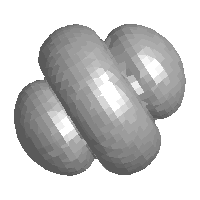

The SPHER_HARM function returns the value of the spherical harmonic Y lm (θ,φ), - l ≤ m ≤ l , l ≥ 0, which is a function of two coordinates on a spherical surface.
The spherical harmonics are related to the associated Legendre polynomial by:
For negative m the following relation is used:
where * represents the complex conjugate.
This routine is written in the IDL language. Its source code can be found in the file spher_harm.pro in the lib subdirectory of the IDL distribution.
Result = SPHER_HARM( Theta , Phi , L , M , [, / DOUBLE ] )
SPHER_HARM returns a complex scalar or array containing the value of the spherical harmonic function. The return value has the same dimensions as the input arguments Theta and Phi . If one argument ( Theta or Phi ) is a scalar and the other argument is an array, the function uses the scalar value with each element of the array, and returns an array with the same dimensions as the input array.
If either Theta or Phi are double-precision or if the DOUBLE keyword is set, the result is double-precision complex, otherwise the result is single-precision complex.
The value of the polar (colatitudinal) coordinate θ at which Y lm (θ,φ) is evaluated. Theta can be either a scalar or an array.
The value of the azimuthal (longitudinal) coordinate φ at which Y lm (θ,φ) is evaluated. Phi can be either a scalar or an array.
A scalar integer, L ≥ 0, specifying the order l of Y lm (θ,φ). If L is of type float, it will be truncated.
A scalar integer, – L ≤ M ≤ L , specifying the azimuthal order m of Y lm (θ,φ). If M is of type float, it will be truncated.
Set this keyword to force the computation to be done in double-precision arithmetic.
This example visualizes the electron probability density for the hydrogen atom in state 3d0. (Feynman, Leighton, and Sands, 1965: The Feynman Lectures on Physics, Calif. Inst. Tech, Ch. 19). The first part of this example defines the data and converts it from rectangular to spherical:
; Define a data cube (N x N x N)
n = 41L
a = 60*FINDGEN(n)/(n-1) - 29.999 ; [-1,+1]
x = REBIN(a, n, n, n) ; X-coordinates of cube
y = REBIN(REFORM(a,1,n), n, n, n) ; Y-coordinates
z = REBIN(REFORM(a,1,1,n), n, n, n); Z-coordinates
; Convert from rectangular (x,y,z) to spherical (phi, theta, r)
spherCoord = CV_COORD(FROM_RECT= $
TRANSPOSE([[x[*]],[y[*]],[z[*]]]), /TO_SPHERE)
phi = REFORM(spherCoord[0,*], n, n, n)
theta = REFORM(!PI/2 - spherCoord[1,*], n, n, n)
r = REFORM(spherCoord[2,*], n, n, n)
The next part computes the electron probability density and radial component, then displays the data:
; Find electron probability density for hydrogen atom in state 3d0
; Angular component
L = 2 ; state "d" is electron spin L=2
M = 0 ; Z-component of spin is zero
angularState = SPHER_HARM(theta, phi, L, M)
; Radial component for state n=3, L=2
radialFunction = EXP(-r/2)*(r^2)
waveFunction = angularState*radialFunction
probabilityDensity = ABS(waveFunction)^2
SHADE_VOLUME, probabilityDensity, $
0.1*MEAN(probabilityDensity), vertex, poly
oPolygon = OBJ_NEW('IDLgrPolygon', vertex, $
POLYGON=poly, COLOR=[180,180,180])
XOBJVIEW, oPolygon
The results are shown in the following figure (rotated in XOBJVIEW for clarity):
|
 |
|
5.4 |
Introduced |